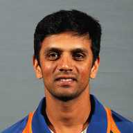
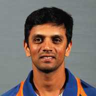

Sachin Tendulker was born on 24 April 1973 Tuesday in Bombay(now Mumbai).His father name is Ramesh tendulker.His father worked as a novelist.His mother name is Rajani Tendulker.His mother worked as a insurance agent.His wife name is Anjali tendulker.His wife worked as Pediateician.Sachin has 2 children.Arjun tendulker and Sara tendulker.Arjun tendulker is a cricketer.Sara tendulker is a medical student.He likes io eat ice gola at street side.He likes to collect Perfumes,watches and CDs.His favourite movie is sholay.He likes to play at Sydney cricket ground and Wankhede stadium.He likes to play lawn tennis,Golf and fornula 1.He likes ti eat at Bukhara Maurya Sheraton hotal at delhi,The harbor bay hotal at Mumbai,Park royal darling hotel at sydney.He got Arjana award at 1994.Rajiv gandhi khel rathna award at 1998.Padma shri at 1999.Maharastra bhushan award at 2001.Padma vibhushan at 2008.Bharat rathna at 2014.
Sachin's last test match live from stadium
Sachin's last odi match.
Sachin's retirement speech
 
